- welcome
-
you're most welcome to lets feed the children
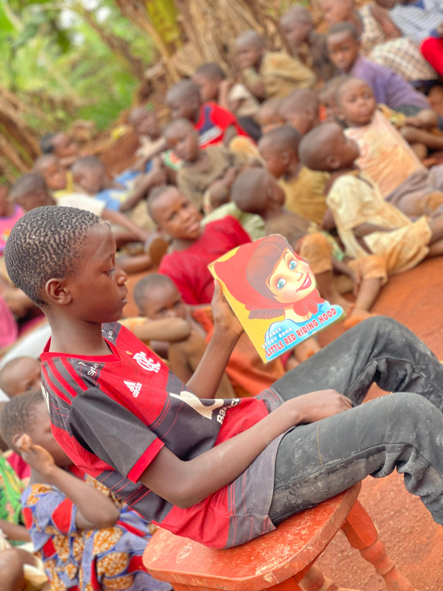 - services
-
at letsfeedthechildren, we are dedicated to providing a nurturing and supportive environment for children in need.
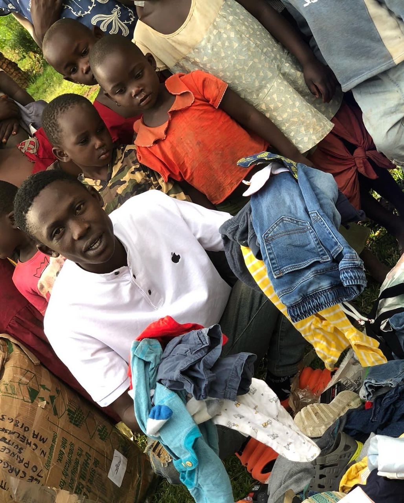we provide a safe and comfortable living space for children, ensuring they have a place to call home. our facilities are designed to create a warm and welcoming atmosphere.
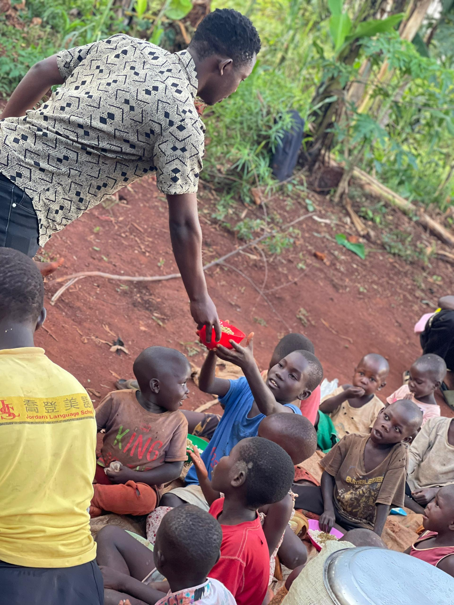proper nutrition is essential for growth and development of children. we offer balanced meals prepared with care, ensuring that every child receives the nourishment they need.
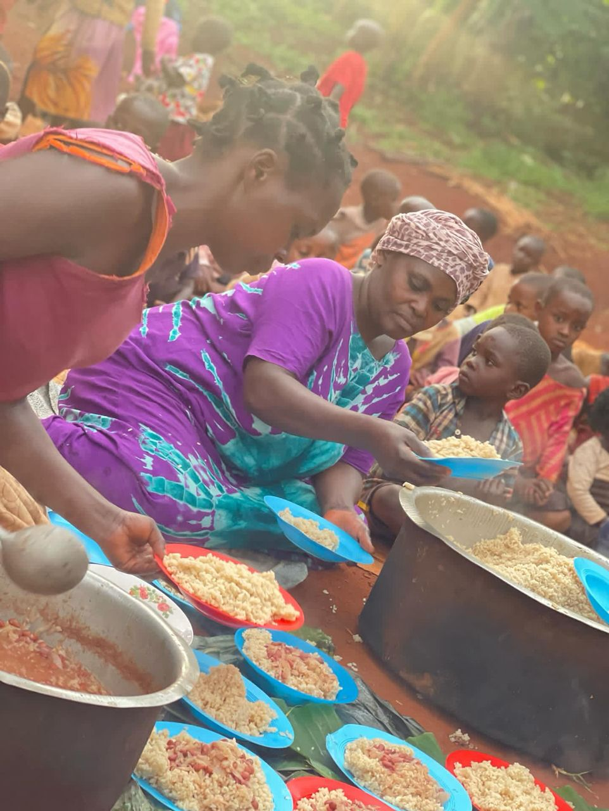we believe in the power of education. our orphanage provides access to quality education, tutoring and learning resources to help children succeed academically and develop essential life skills.
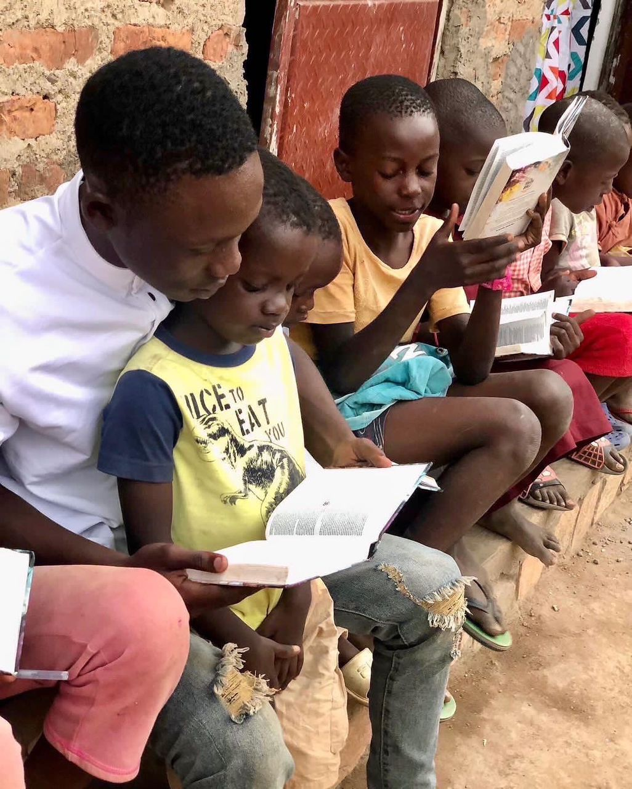the health and well being of our children are our top priorities. we provide regular health checkups, vaccinations and access to medical care to ensure that every child is healthy and thriving.
understanding the emotional challenges faced by children in orphanage, we offer counselling and support services to help them cope with their experiences and build resilence.
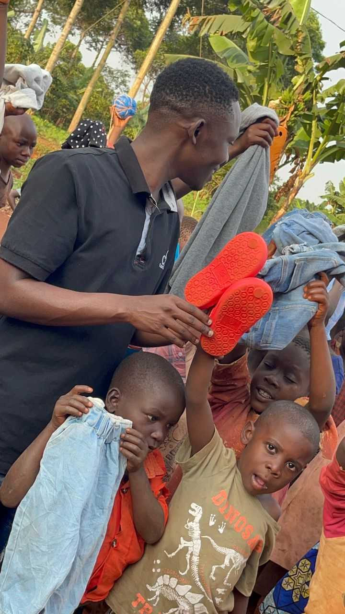we organise various recreational activities including sports, art and crafts and community outings to promote social interactions, creativity and physical well being.
we welcome volunteers interns who wish to contribute their time and skills to support our mission. this provides a valuable opportunity for individuals to make a positive impact in lives of our children.
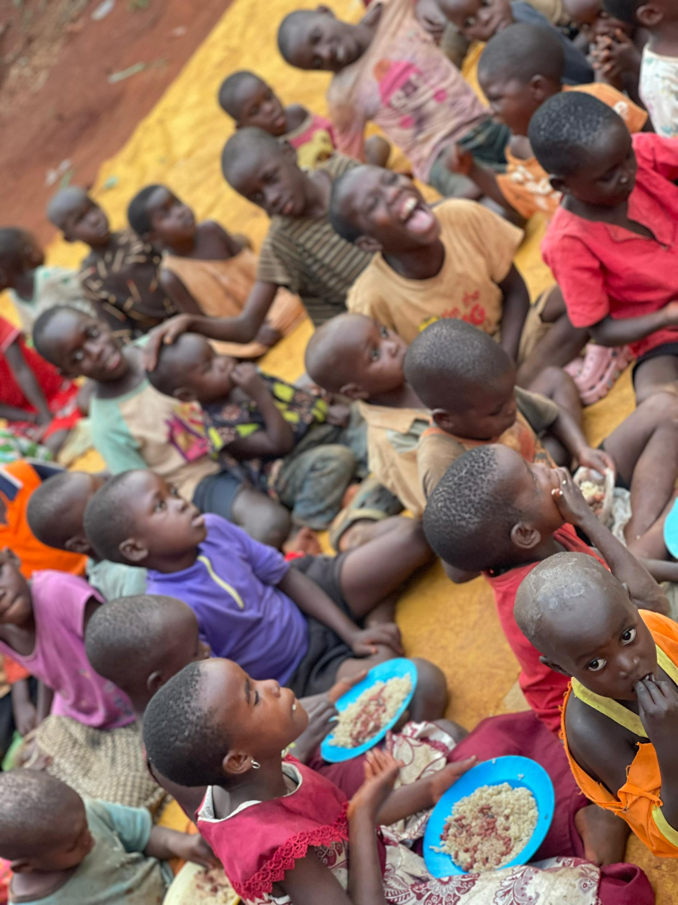 - director
-
i am called sam, the son of mr benjamain and mrs mary who saddenly passed away in 2011. at that time i was 8 years old. i endured alot of suffering and eventually ended up on the the streets of bugiri district in uganda without anyone to support me.
lucky enough, i was taken to an orphanage by a concerned individual from the baptist church in our community where i receive care and education.
when my academic program came to an end in 2018, i hard a dream of starting an orphanage which succeed through much love and faith.
i believe that everyone derserves an opportunity to live a happy life.
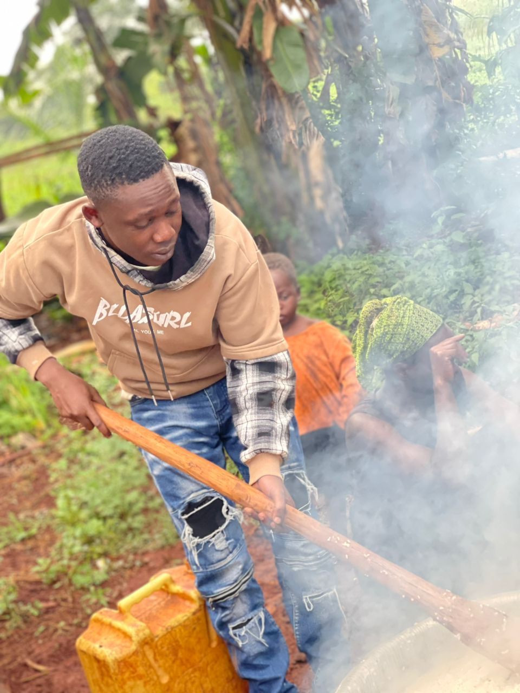 - about us
-
At letsfeedthechildren, located in bugiri from uganda, we are dedicated to providing a safe, nurturing, and loving environment for children in need. Our mission is to empower these children by offering them not only shelter and sustenance but also education and emotional support. Since our founding in 2018, we have grown to become a beacon of hope for many, helping them to overcome adversity and build brighter futures.
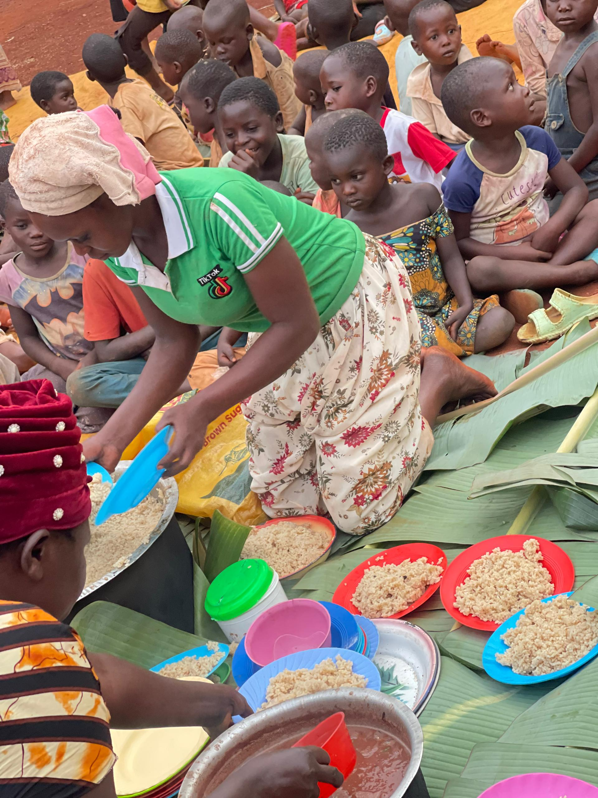We believe that every child deserves a chance to thrive, and through our various programs, including educational initiatives and vocational training, we strive to equip them with the skills they need to succeed. Our dedicated team of staff and volunteers work tirelessly to create a supportive community where each child feels valued and loved.
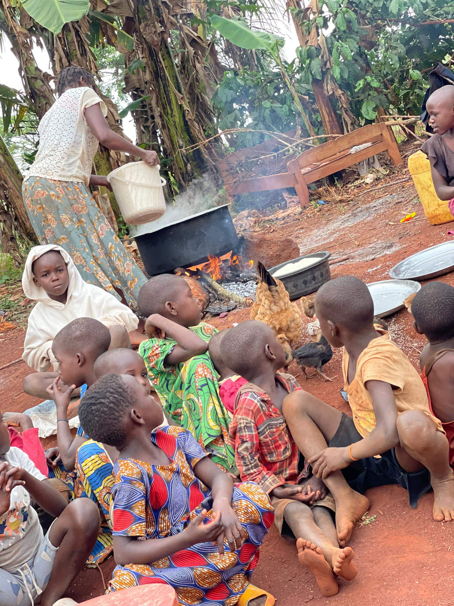We invite you to join us in our mission. Your support, whether through donations, volunteering, or simply spreading the word, can make a significant difference in the lives of these children. Together, we can help them realize their full potential and create a brighter tomorrow. Thank you for believing in our cause and for your continued support.
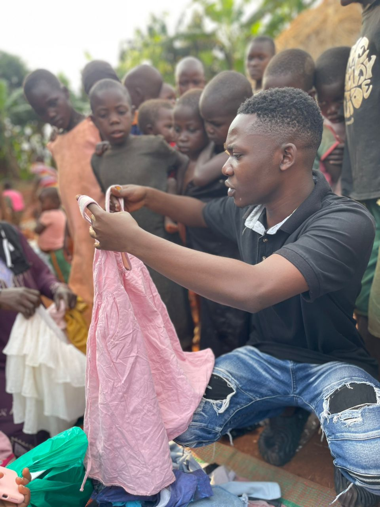 - donate
-
help us make a difference in the lives of children in need. your generous donations provide shelter, education and hope to orphans at our orphanage. Together, we can create a brighter future for these children. please consider donating today through our gofundme link icon below.